Getting started
Installing
HyperSeven CAD runs on Macs (Apple Silicon and Intel) and on Windows 10 and 11 (64-bit).
- Mac — Get the .dmg from Download, open it and drag HyperSeven CAD into the Applications folder. For an Intel Mac, use Intel Mac under the download button.
- Windows — Click Download for Windows to install from the Microsoft Store. If you use Zip file (.zip) below it, unzip the file and open supercad.exe.
First launch
On the Mac, if macOS asks whether to open an app downloaded from the internet, click Open. On Windows, if you opened the app from the .zip and see “Windows protected your PC”, click More info → Run anyway.
The first time you open the app, the start screen asks one thing: What are you here to do? Choose 2D drawing, 3D models, Surface models, Architecture or I'm new, and the workspace, tools and shortcuts are set to match. Three ways to start that work (a new document, one sample and opening a file you received) appear at the top. The other starts are below under Other ways to start, and Reselect changes your answer. Click Later to start in 3D Modeling.
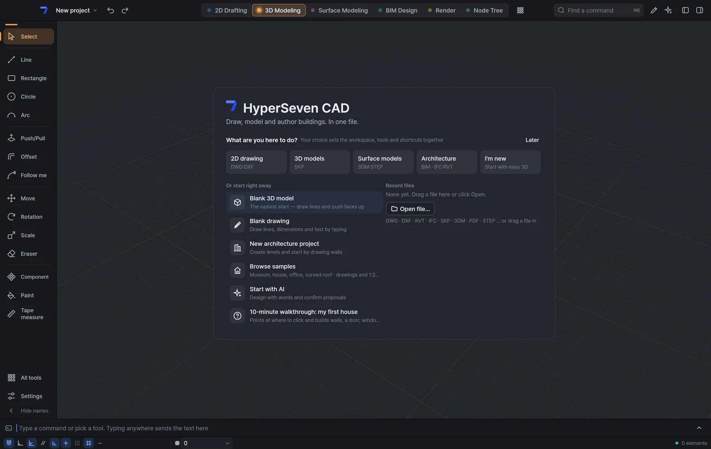
- Get started — Click Blank 3D model, Blank drawing, New architecture project, Browse samples or Start with AI. Click 10-minute walkthrough: my first house and the app points to the next place to click while you build a house together (the same steps as “Build a house with BIM” below).
- Recent files — Click Open file… or drag a file onto the window.
Choosing a keys & mouse style
Shortcuts and mouse drags follow one of four styles. Change it at any time in . Open Settings with ⌘, (Ctrl+,) or with Settings at the bottom of the tool rail on the left.
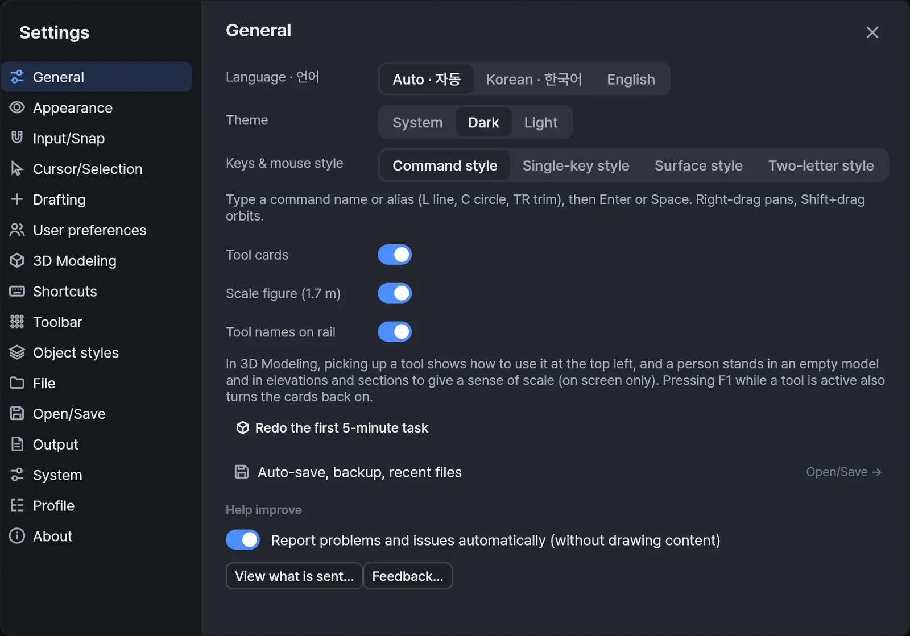
| Style | How you pick up a tool | Answer on the start screen |
|---|---|---|
| Command style | Type a command name or alias (L line, C circle, TR trim), then Enter or Space | 2D drawing |
| Single-key style | One key, straight away (L line, R rectangle, P push/pull). Space is Select | 3D models · I'm new |
| Surface style | Type a command name, then Enter or Space. Aliases of surface commands come first | Surface models |
| Two-letter style | Two letters, straight away (WA wall, DR door, WN window) | Architecture |
In every style, ⌘K (Ctrl+K) finds any command by name. To change individual keys, open .
Opening your files
Drag a file onto the window or choose (⌘O, Ctrl+O on Windows). DWG, DXF, SKP, 3DM, RVT, IFC and PDF files open directly.
- When you open a file in another format, a card tells you what was read, and the file opens in the workspace that suits its format.
- A PDF comes in as lines, fills and text. It arrives at paper size, so scale it to real size.
- For samples, click Browse samples on the start screen or choose . The one you pick opens as a new document.
Saving
Save with ⌘S (Ctrl+S). You name the document the first time, and it is kept in one design source file (.sdz). 2D drawings, 3D models, building models and sheets are all inside it.
- To hand work over in another format, use (⇧⌘S, Ctrl+Shift+S on Windows) or (⇧⌘E, Ctrl+Shift+E on Windows).
- Printing and PDF both happen in one window: (⌘P, Ctrl+P on Windows).
- Saving starts in your Documents folder, and the app asks once before overwriting an existing file.
The app tells you when a new version is out.
The window
From top to bottom: the top bar; the tool rail, browser, canvas and inspector in the middle; then the command line and the status bar.
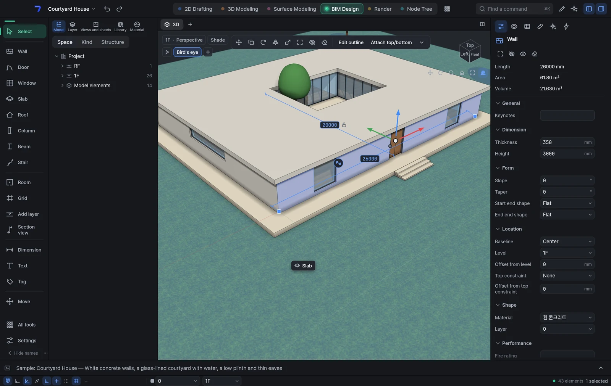
- Top bar — On the left, the document name with undo and redo. In the middle, six workspaces: 2D Drafting, 3D Modeling, Surface Modeling, BIM Design, Render and Node Tree (shortened to 2D, 3D, Surfaces, BIM, Render and Node in a narrow window). On the right, Find a command, the AI button, and the buttons that fold the side panels. Support is under Help › Support us….
- Workspaces — A workspace is a set of tools, not a separate program. There is one model, and whatever you make in any workspace lands in it. The grid button next to the workspaces shows every tool in one window.
- Tool rail — On the left, the tools of the current workspace with their names. Hide names at the bottom leaves only the icons; All tools and Settings sit just above it.
- Browser — Next to the tool rail, the model listed by Space, Kind or Structure. The icon tabs above (their names show under the icons) switch to layers, views and sheets, the library, and materials.
- View tabs — 3D, plans, sections and sheets open as tabs above the canvas. Use + next to them to open a new view.
- Inspector — On the right, the values of what you selected. With nothing selected, What next comes first. In a plan, Draw walls · Add a door · Add a window · Make a section · This view to PDF · Make a drawing set are one click each, and the settings of the current view and the document are folded below under View settings.
- Command line — One line at the bottom of the window. Type anywhere and the text goes here; a command's prompts and options appear here too. Korean command names (벽 · 문 · 창 · 치수) also run with Enter.
- Status bar — At the very bottom: drawing aids such as snap and ortho, the coordinates, the current layer and level, and the number of elements.
A blank document starts as a wide canvas with both side panels folded. The browser opens when you draw something, and the inspector when you select something. On laptops with a window 1440 wide or less, the browser starts folded (open it with the browser button on the top bar). Press ⌘0 (Ctrl+0) to hide all the frames and see only the canvas.
Find a command — ⌘K
Press ⌘K (Ctrl+K) or click Find a command in the top bar, and type a name you know. Full names and aliases both work, and Enter starts the command. Every command shows one line about what it does and its category.
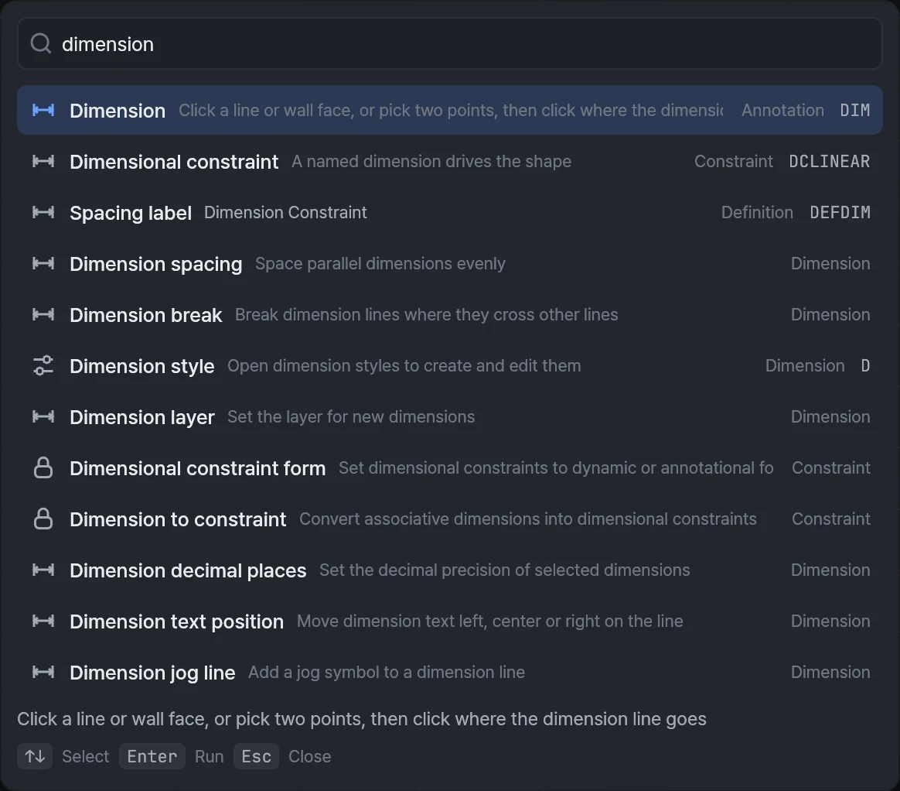
PDF in one go — This view to PDF
This view to PDF asks only for paper and scale, places the plan, section, elevation or 3D view you are looking at on a sheet and writes a PDF. One undo removes the sheet, and exporting the same view again updates that sheet. Choose Drawing set in the same window to place every level's plan, four elevations and the sections one per sheet at one scale, as one PDF. Find it in What next, at the top of the Output window, in the File menu and in ⌘K.
How to use the current command — F1
Press F1 while a command is running. Under Current command, the Command help window shows how to use it in three lines, what it is asking now and the options you can choose. Hover over a tool button to see one line about what it does.
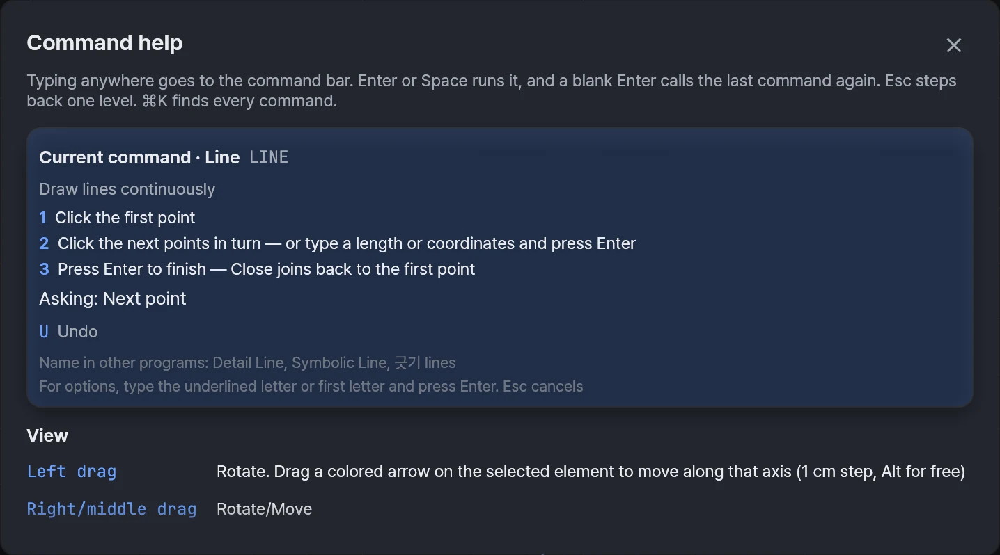
Step by step
Follow four ways of working from start to finish: 2D only, 3D first, BIM first, or mixed. Whichever you start with, the work continues in the same file. Every picture shows the real app.
Draw a 2D drawing
Draw an 8 × 6 m room, add dimensions and text, and open the Output window. You type a command name and press Enter.
On the start screen, under “What are you here to do?”, choose 2D drawing, then click Blank drawing at the top. Shortcuts switch to Command style and the 2D Drafting workspace opens.
Type REC and press Enter. For the first corner type 0,0 and press Enter; for the opposite corner type @8000,6000 and press Enter. You get a rectangle 8000 mm wide and 6000 mm tall. What you type goes into the command line at the bottom of the window.
Type O and press Enter, then type the offset distance 200 and press Enter. Click the rectangle, then click once inside it: a parallel rectangle appears 200 mm in. Press Enter to finish.
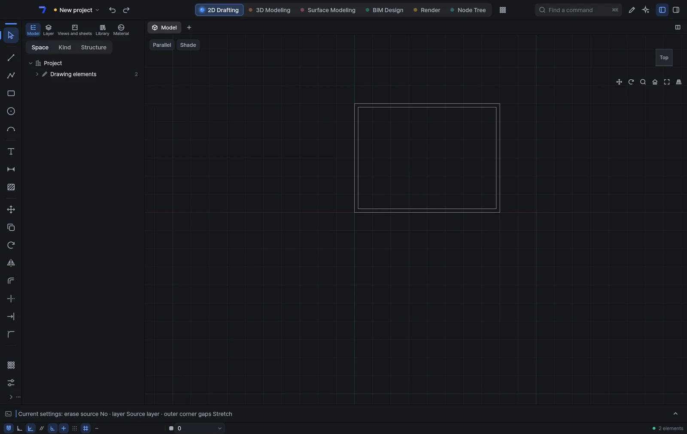
Type DLI and press Enter. Click the left end and then the right end of the bottom edge, then click where the dimension line should sit. Run DLI once more and click the bottom and top ends of the right edge to add the vertical dimension.
Type DT and press Enter, then click where the text should go. Type the height 300 and press Enter, and press Enter again to skip the rotation angle. Type Living room and press Enter twice to place the text.
Type Z and press Enter, then E and Enter. Everything you drew now fits the window.
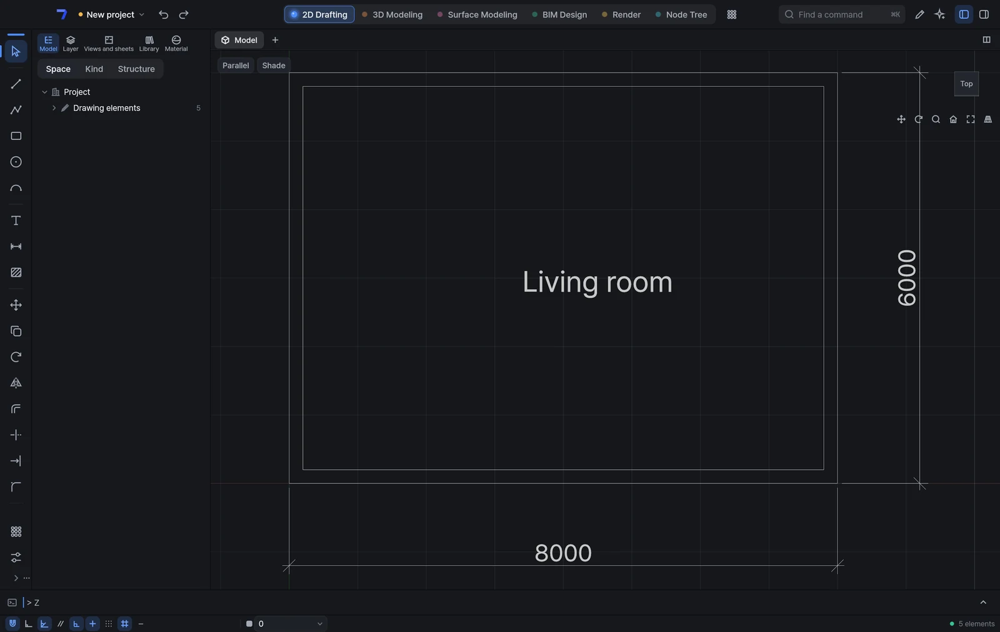
Press ⌘P (Ctrl+P) to open the Output window. The preview in the middle is the same picture the PDF will contain. On the right, set Send to, Range, Paper & scale and Lines & color, in that order.
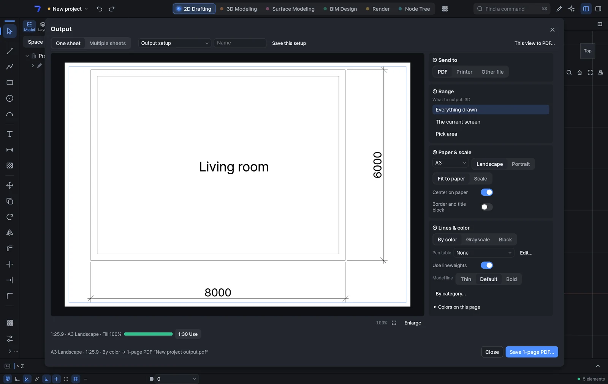
| Commands used here | How to use it |
|---|---|
| Rectangle REC | Click the first corner → Click the opposite corner and the rectangle is drawn → For an exact size, type @width,height instead of the corner and press Enter |
| Offset O | Type the offset distance and press Enter → Click the object to offset, then click the side to offset to → Repeat with other objects, then press Enter to finish |
| Horizontal/vertical dimension DLI | Click the first point to measure from → Click the second point → Click where the dimension line should sit |
| Text DT | Click where the text starts → Type the height and rotation angle, or press Enter to skip them → Type the text and press Enter, then press Enter once more on the empty line |
- Commands also run by their full names. Type RECTANG or DIMLINEAR and press Enter.
- Press F1 while a command is running to see how to use it in three lines.
- Dimensions read in whole millimetres by default. Select a dimension you drew and pick 0.0 · 0.00 (up to two decimals), ft-in (feet-inches) or in (inches) under Dimension units in the inspector: every dimension in the document changes, and one ⌘Z brings them back.
- Save with ⌘S (Ctrl+S). To hand the drawing over in another format, use or .
Build a 3D model
Draw a rectangle and push it up into an 8 × 6 × 4 m box, cut a hole through the middle, and apply a material. Each tool is one key.
On the start screen, under “What are you here to do?”, choose 3D models, then click Blank 3D model at the top. Shortcuts switch to Single-key style and the 3D Modeling workspace opens.
Press R and click the origin on the ground. Type 8000,6000 and press Enter to get a face 8 m wide and 6 m deep.
Press P, click the face, and move the pointer up a little. Type 4000 and press Enter: the face rises 4 m and becomes a box. Press Space to return to the Select tool.
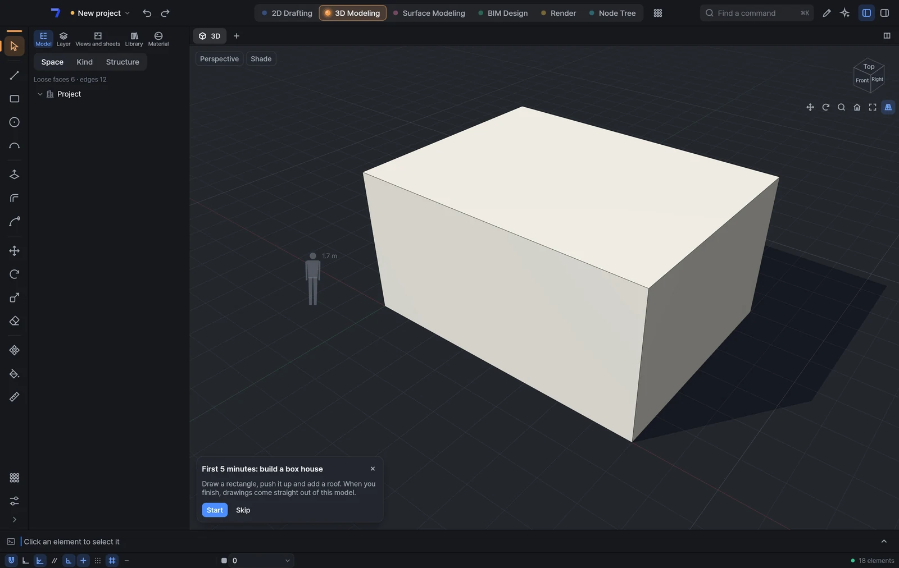
Press R, click a point on the top face, type 4000,2000 and press Enter. Press P, click the face you just drew, move the pointer down, type 4000 and press Enter. The face is pushed through to the bottom and leaves a hole. Press Space to put the tool down.
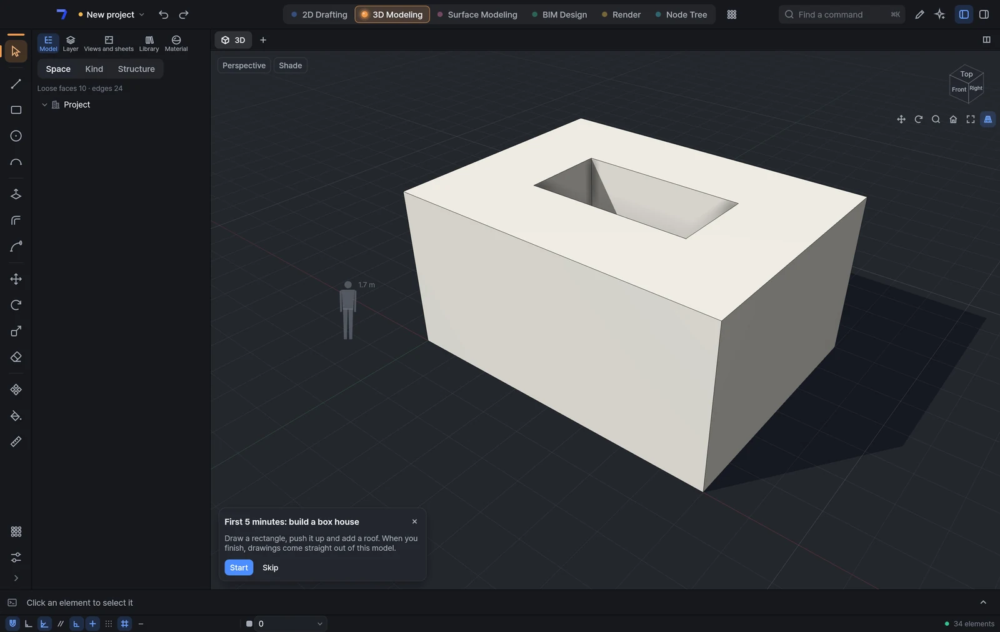
Click a face of the box three times quickly to select every connected face and edge. Press ⌘K (Ctrl+K), type Create group and press Enter to make them one group.
Press Space, then B: the materials panel opens on the left. Choose Brick and click the front face of the box to apply it. Press Space to finish.
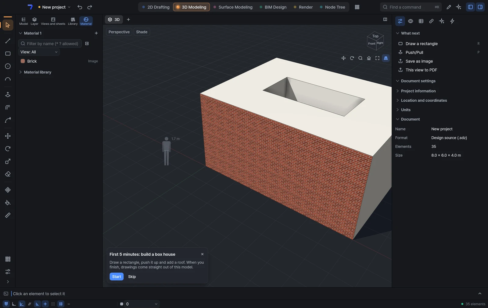
| Commands used here | How to use it |
|---|---|
| Rectangle R | Click the first corner → Click the opposite corner — or type width,height and press Enter → The closed rectangle becomes a face at once |
| Push/Pull P | Click the face to push or pull → Move and click, or type the distance and press Enter → Type a distance again right away to correct the one you just gave |
| Create group | Select the geometry to group → Run the command and the selection becomes a group → Double-click the group to go inside and edit it |
- Double-click a group to go inside and edit it; press Esc to come back out.
- Drag with the right button to orbit, and hold Shift while dragging with the right button to pan. Scroll to zoom in and out at the pointer.
- Undo what you just did with ⌘Z (Ctrl+Z).
Build a house with BIM
Place walls, a door, windows, a floor, a roof and a room to build an 8 × 6 m house, then draw a section and open it. Each tool is two letters.
On the start screen, under “What are you here to do?”, choose Architecture, then click New architecture project at the top. Levels 1F and 2F are created and the 1F plan tab opens.
Press WA and click the four corners of the house in turn, then click the first point again to close the loop. Press Esc twice to put the tool down.
Press DR and click on the bottom wall to place a door. Press Esc twice, then press WN and click the top wall in two places to place two windows. Press Esc twice to put the tool down.
Press FL, click the four outer corners of the walls in turn, and press Enter to make the floor. Press Esc, then press RF, click the same four corners and press Enter: the roof sits on top of the walls. Press Esc to put the tool down.
Press RM and click inside the walls to make a room. Press Esc twice to put the tool down.
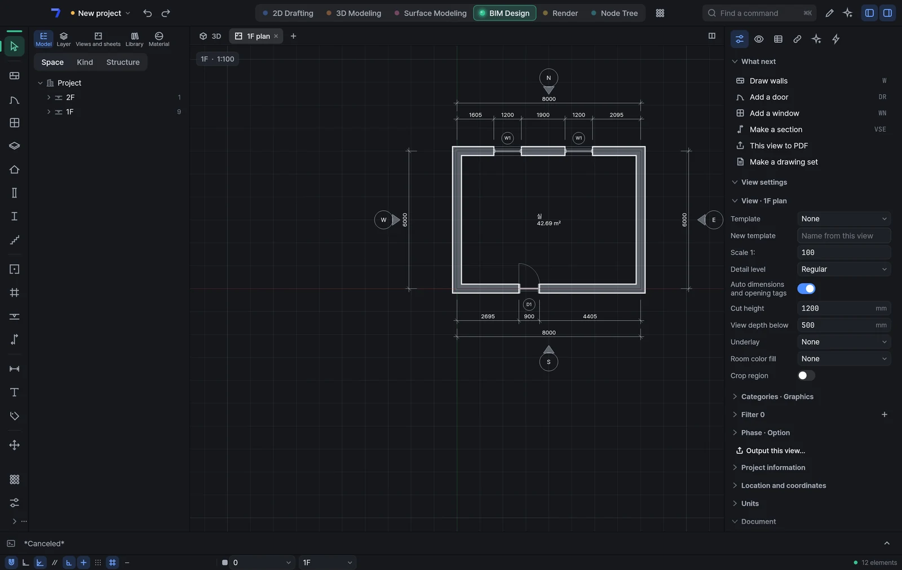
Type VSE and press Enter, then click outside the house on the left and outside on the right to draw a section line across it. Press Esc twice, then double-click the section line to open the section tab.
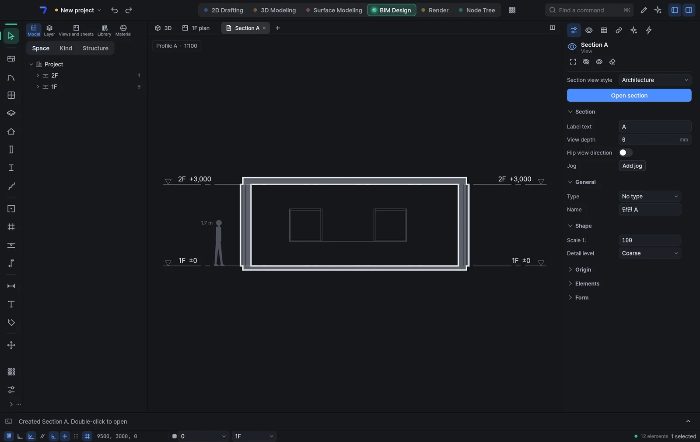
| Commands used here | How to use it |
|---|---|
| Wall WA | Click the start point of the wall → Click the next point — or aim in a direction and type the length → Keep drawing, then press Enter to finish |
| Door DR | Click the spot on a wall for the door → Keep clicking other spots → Press Enter to finish |
| Window WN | Click the spot on a wall for the window → Keep clicking other spots → Press Enter to finish |
| Slab FL | Choose the Wall outline option and it is made along the walls at once → To draw it yourself, click the outline points and click the first point again → Press Enter and the slab is made |
| Roof RF | Choose the Wall outline option and it is made along the walls at once → To draw it yourself, click the outline points and click the first point again → Press Enter and the roof is made |
| Room RM | Set the room name with the Name option → Click inside the space — its area is shown as well → Press Enter to finish |
| Section view VSE | Click the start point of the section line → Click the end point — change the viewing side with the options → Double-click the section line to open the section view |
- Use + next to the view tabs to open other floor plans, sections, elevations and schedules as tabs.
- Click a wall to see its length and the distance to its neighbors as numbers. Click a number and type a value: the wall moves, and the connected walls, rooms and dimensions follow.
- You can also pick tools from the buttons in the tool rail on the left. To find one by name, press ⌘K (Ctrl+K).
Turn a 3D mass into a building and dimension the plan
Shape the form in 3D first, turn it into walls, floors and a roof, then add a dimension on the plan. There is one model, and everything you make lands in it.
On the start screen, under “What are you here to do?”, choose 3D models, then click Blank 3D model at the top.
Press R, click the origin on the ground, type 8000,6000 and press Enter. Press P, click the face, move the pointer up, type 6600 and press Enter to get a mass two storeys tall. Press Space to put the tool down.
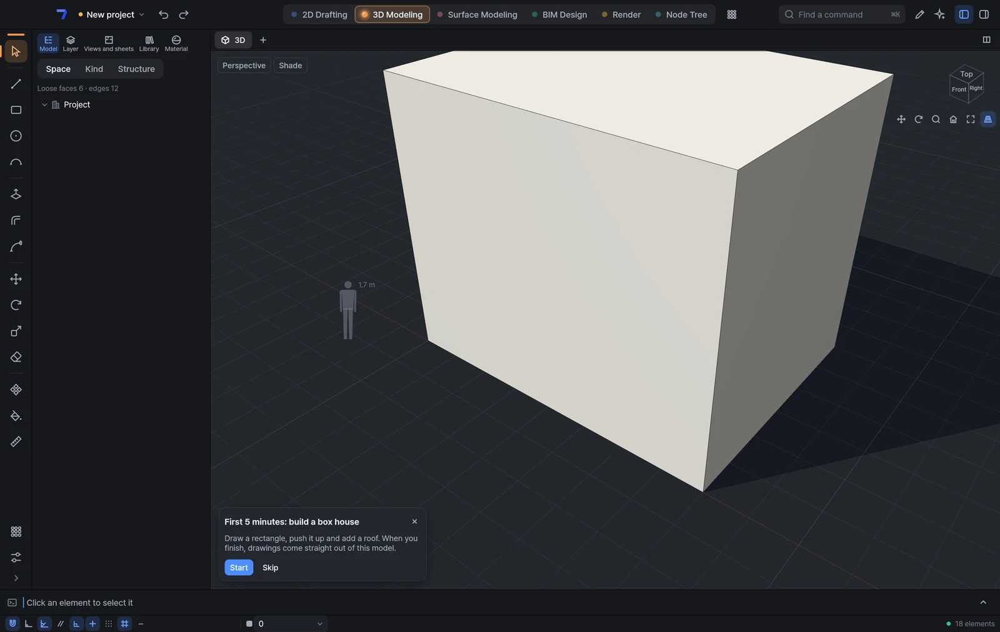
Click a face of the mass three times quickly to select all of it. Press ⌘K (Ctrl+K), type Convert to BIM and press Enter. When it asks for the storey height, press Enter to accept the suggested 3300. Each level gets walls and a floor, and a roof goes on top. Press Space to return to the Select tool.
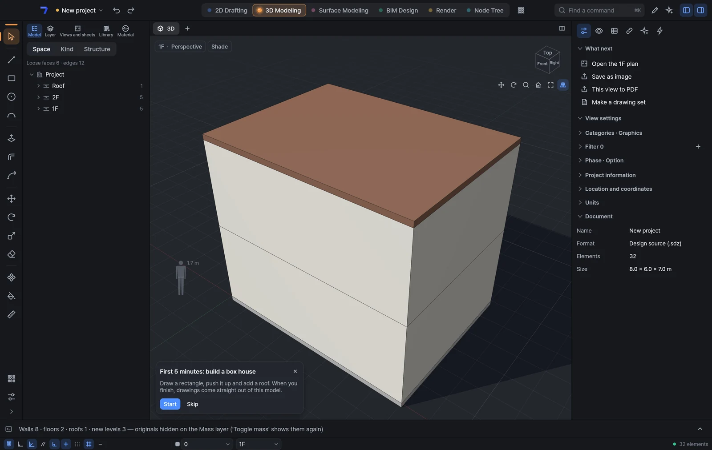
Press ⌘K (Ctrl+K), type Plan view and press Enter to open the 1F plan tab.
Press ⌘K (Ctrl+K), type Dimension and press Enter. Click the outer face of the bottom wall, then click where the dimension line should sit: it reads 8000. Press Esc to finish.
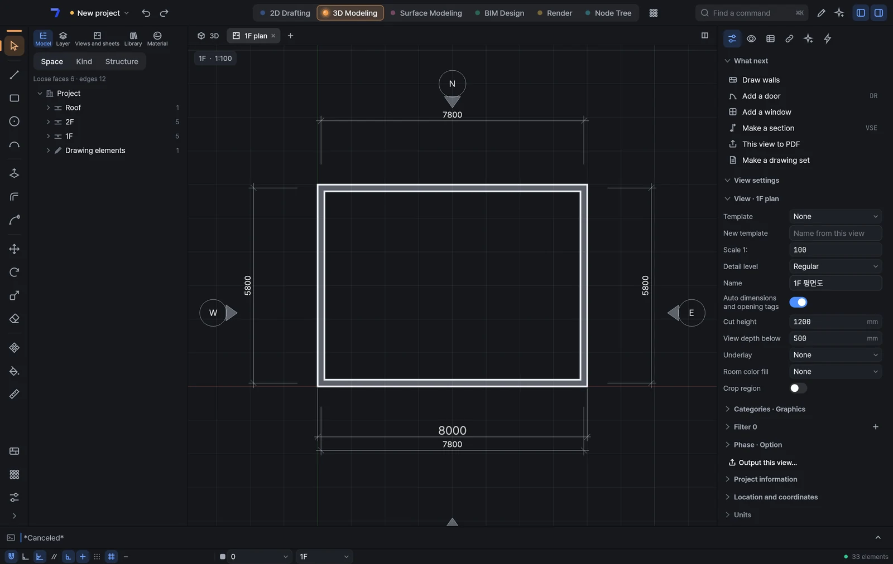
| Commands used here | How to use it |
|---|---|
| Rectangle R | Click the first corner → Click the opposite corner — or type width,height and press Enter → The closed rectangle becomes a face at once |
| Push/Pull P | Click the face to push or pull → Move and click, or type the distance and press Enter → Type a distance again right away to correct the one you just gave |
| Convert to BIM | Select the solids to convert and press Enter → Type the storey height and press Enter — Enter alone takes the suggested value → The originals move to the mass layer and are hidden — Keep originals leaves them in place |
| Dimension | Click the line or wall face to measure — or click two points in turn → Click where the dimension line should sit → Go on to measure other places, then press Enter to finish |
- After converting, the original mass is kept hidden on the Mass layer. Bring it back with Toggle mass in ⌘K (Ctrl+K).
- Dimensions and lines you add on a plan belong to that view only, and a dimension attached to a wall face follows the wall when it moves.
- You can start in 2D just as well. 2D drawings, 3D models and building models all live in one file.
Turn on Hyper AI
Hyper AI reads the model and turns what you ask for into purple proposals. Sign in and connect your own Anthropic API key to use it.
Click the AI button in the top bar to open the Hyper AI panel on the right. Sign in with one of the buttons at the bottom: Sign in with Apple, Sign in with Google or Login with Kakao.
The Hyper AI panel before signing in. After you sign in, a box for the key appears in the same place. Paste an API key made in the Anthropic Console (it starts with sk-ant-) and click Save. The key is stored in this computer's keychain, so you enter it only once.
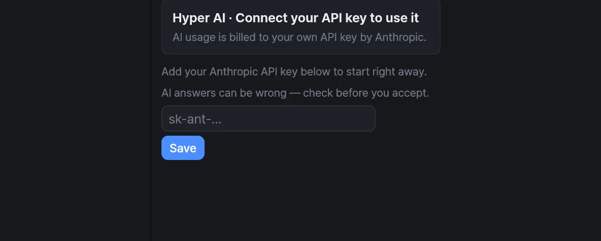
After signing in. Put your API key in the key box. Type what you want in the box at the bottom of the panel and click Send. What the AI makes is placed on screen as purple proposals, and a strip above the canvas shows how many there are and the result of the checks. The model changes only when you click Accept; Discard removes the proposals.
Example scene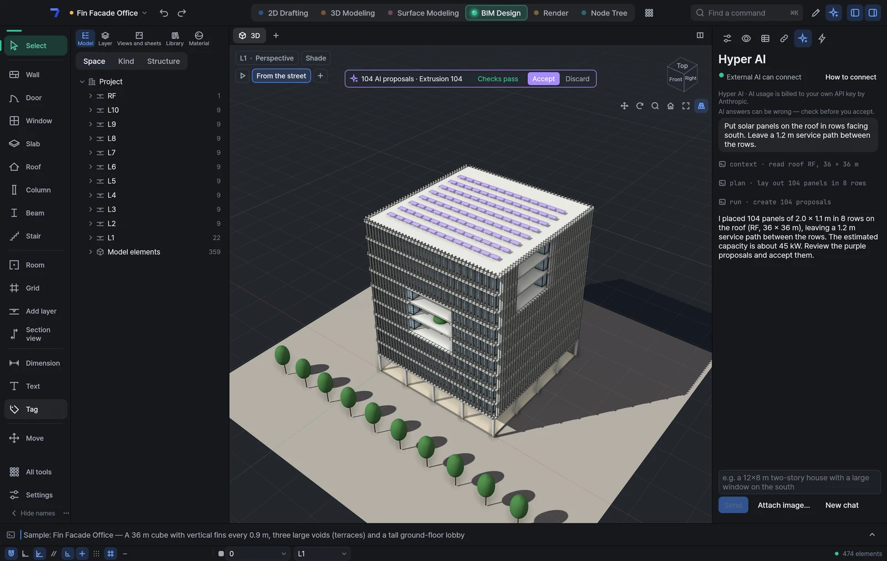
Ask in words and the result stays as purple proposals. This example scene was captured with a scripted conversation.
- Connecting Hyper AI is free. AI usage is billed to your own API key by Anthropic.
- AI answers can be wrong, so check before you accept.
- Sign-in uses the same account as HyperSeven Office.
Connect AI agents (MCP)
An MCP server is built into the app, so there is nothing extra to install. Connect an AI agent such as Claude Code or Claude Desktop, and it reads the open document and edits it with you.
Connecting
For Claude Code on a Mac, run this one line in Terminal once.
claude mcp add hyperseven-cad -- "/Applications/HyperSeven CAD.app/Contents/MacOS/supercad" mcp
- Windows — Click How to connect at the top of the Hyper AI panel to see the command for this computer. Use Copy and paste it into a terminal.
- Claude Desktop — Copy the second block in the same place, add it to
mcpServersunder Settings ▸ Developer ▸ Edit Config, and restart Claude Desktop.
Changes stay as proposals
While the app window is open, the agent edits the same document you are looking at. What the agent makes stays as purple proposals, and you choose Accept or Discard. The green dot at the top of the Hyper AI panel means an external AI can connect to this window.
Report a problem
When something goes wrong, report it on the spot. The development team reads the reports and fixes problems in later versions.
- Choose (⌘⇧F, Ctrl+Shift+F on Windows, or ‘Report a problem’ in ⌘K). A picture of the current screen is taken and shown in the window.
- Write what you were doing and what went wrong in the box and click Send. Clear the check box if you do not want to send the picture. Add an email if you want a reply (optional).
- A report number appears. Without an internet connection, the report is kept on this computer and sent the next time you open the app. When it is fixed, the app tells you the next time you open it.
The version, OS, workspace, tool, recent commands, last message and errors go with it. Your drawing file is not sent. Automatic reports of errors and stuck moments, without drawing content, can be turned off in .
Keyboard shortcuts
These keys are the same in every keys & mouse style. Mac keys come first, with Windows keys in parentheses. The letters that pick up tools differ by style; see Choosing a keys & mouse style.
| Action | Keys |
|---|---|
| Find a command | ⌘K (Ctrl+K) |
| Command help | F1 |
| New · Open | ⌘N · ⌘O (Ctrl+N · Ctrl+O) |
| Save · Save As | ⌘S · ⇧⌘S (Ctrl+S · Ctrl+Shift+S) |
| Export · Output | ⇧⌘E · ⌘P (Ctrl+Shift+E · Ctrl+P) |
| Undo | ⌘Z (Ctrl+Z) |
| Close tab | ⌘W (Ctrl+W) |
| Settings | ⌘, (Ctrl+,) |
| Focus mode | ⌘0 (Ctrl+0) |
| Feedback | ⌘⇧F (Ctrl+Shift+F) |
| Confirm · Step back one level | Enter · Esc |
| Lock to a reference axis (Line · Move · Copy) · Pick the rotation axis in 3D | → X · ← Y · ↑ Z (3D) · ↓ release |
Mouse and trackpad
| Gesture | What it does |
|---|---|
| Scroll (wheel · two fingers on a trackpad) | Zoom in and out at the pointer |
| Right-drag | Pan in Command style and Two-letter style; orbit in Single-key style and Surface style |
| Shift + right-drag | Orbit in Command style and Two-letter style; pan in Single-key style and Surface style |
| Left-drag from an empty spot | Select with a box — left to right takes only what is fully inside, right to left also takes what the box crosses |
Coming next
A command reference with how to use each command, and longer guides on drawing sets, output and exchanging files, are on the way. Until then, F1 while you work and ⌘K (Ctrl+K) when you need a command by name are the quickest help. For an overview of features, see the CAD page.